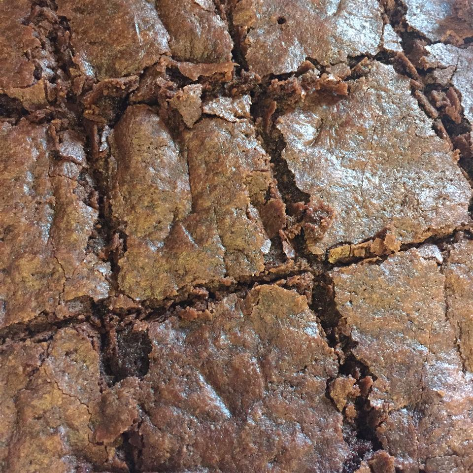

Cleves Brownie Recipe

Description
Looking for the perfect late night snack that is both easy to make and irresistibly delicious? Well then say hello to Cleves brownies! You'll be whipping these up in just a jiffy and they taste so good!
Below you will find the ingredient list and the easy to follow step by step instructions.
Ingredients
- 1 cup unsweetened cocoa powder
- ½ cup melted butter
- 2 cups white sugar
- 2 eggs
- ¼ teaspoon salt
- 1 cup all-purpose flour
- 2 teaspoons vanilla extract
- ⅓ cup confectioners' sugar for decoration
Steps
- Preheat oven to 300 degrees F (150 degrees C). Line one 9x13 inch pan with greased parchment paper.
- Combine the cocoa, melted butter, sugar, eggs, salt , flour and vanilla. Mix until well combined. It should be very thick and sticky.
- Spread mixture into the prepared pan. Bake at 300 degrees F (150 degrees C) for 30 minutes. Cool completely before cutting into squares.
Nutrition Facts
Per Serving: 139 calories; protein 1.8g; carbohydrates 24.3g; fat 4.8g; cholesterol 25.7mg; sodium 58.2mg.